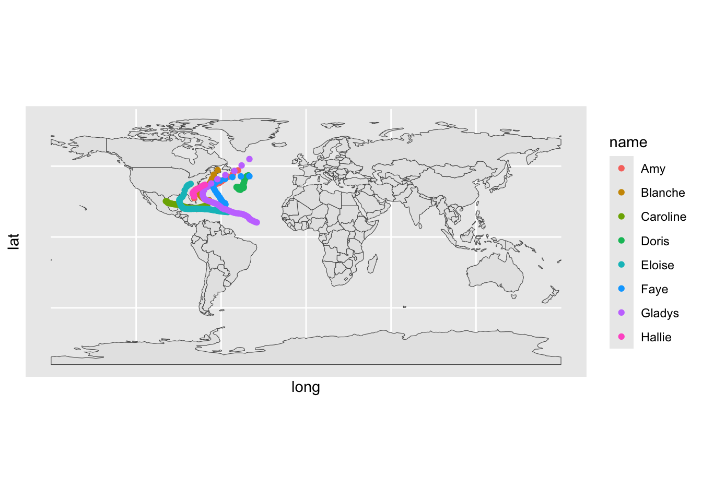

Linking to GEOS 3.10.2, GDAL 3.4.2, PROJ 8.2.1; sf_use_s2() is TRUE
library(rnaturalearth) # data base of maps
The legacy packages maptools, rgdal, and rgeos, underpinning the sp package,
which was just loaded, were retired in October 2023.
Please refer to R-spatial evolution reports for details, especially
https://r-spatial.org/r/2023/05/15/evolution4.html.
It may be desirable to make the sf package available;
package maintainers should consider adding sf to Suggests:.
# rnaturalearthhires
Tropical Cyclones in the North Atlantic
# our first "vector data" set (informal)storms # from dplyr
# A tibble: 19,537 × 13
name year month day hour lat long status category wind pressure
<chr> <dbl> <dbl> <int> <dbl> <dbl> <dbl> <fct> <dbl> <int> <int>
1 Amy 1975 6 27 0 27.5 -79 tropical d… NA 25 1013
2 Amy 1975 6 27 6 28.5 -79 tropical d… NA 25 1013
3 Amy 1975 6 27 12 29.5 -79 tropical d… NA 25 1013
4 Amy 1975 6 27 18 30.5 -79 tropical d… NA 25 1013
5 Amy 1975 6 28 0 31.5 -78.8 tropical d… NA 25 1012
6 Amy 1975 6 28 6 32.4 -78.7 tropical d… NA 25 1012
7 Amy 1975 6 28 12 33.3 -78 tropical d… NA 25 1011
8 Amy 1975 6 28 18 34 -77 tropical d… NA 30 1006
9 Amy 1975 6 29 0 34.4 -75.8 tropical s… NA 35 1004
10 Amy 1975 6 29 6 34 -74.8 tropical s… NA 40 1002
# ℹ 19,527 more rows
# ℹ 2 more variables: tropicalstorm_force_diameter <int>,
# hurricane_force_diameter <int>
Simple feature collection with 177 features and 63 fields
Geometry type: MULTIPOLYGON
Dimension: XY
Bounding box: xmin: -180 ymin: -90 xmax: 180 ymax: 83.64513
Geodetic CRS: +proj=longlat +datum=WGS84 +no_defs +ellps=WGS84 +towgs84=0,0,0
First 10 features:
scalerank featurecla labelrank sovereignt sov_a3 adm0_dif
0 1 Admin-0 country 3 Afghanistan AFG 0
1 1 Admin-0 country 3 Angola AGO 0
2 1 Admin-0 country 6 Albania ALB 0
3 1 Admin-0 country 4 United Arab Emirates ARE 0
4 1 Admin-0 country 2 Argentina ARG 0
5 1 Admin-0 country 6 Armenia ARM 0
6 1 Admin-0 country 4 Antarctica ATA 0
7 3 Admin-0 country 6 France FR1 1
8 1 Admin-0 country 2 Australia AU1 1
9 1 Admin-0 country 4 Austria AUT 0
level type admin adm0_a3 geou_dif
0 2 Sovereign country Afghanistan AFG 0
1 2 Sovereign country Angola AGO 0
2 2 Sovereign country Albania ALB 0
3 2 Sovereign country United Arab Emirates ARE 0
4 2 Sovereign country Argentina ARG 0
5 2 Sovereign country Armenia ARM 0
6 2 Indeterminate Antarctica ATA 0
7 2 Dependency French Southern and Antarctic Lands ATF 0
8 2 Country Australia AUS 0
9 2 Sovereign country Austria AUT 0
geounit gu_a3 su_dif
0 Afghanistan AFG 0
1 Angola AGO 0
2 Albania ALB 0
3 United Arab Emirates ARE 0
4 Argentina ARG 0
5 Armenia ARM 0
6 Antarctica ATA 0
7 French Southern and Antarctic Lands ATF 0
8 Australia AUS 0
9 Austria AUT 0
subunit su_a3 brk_diff name
0 Afghanistan AFG 0 Afghanistan
1 Angola AGO 0 Angola
2 Albania ALB 0 Albania
3 United Arab Emirates ARE 0 United Arab Emirates
4 Argentina ARG 0 Argentina
5 Armenia ARM 0 Armenia
6 Antarctica ATA 0 Antarctica
7 French Southern and Antarctic Lands ATF 0 Fr. S. Antarctic Lands
8 Australia AUS 0 Australia
9 Austria AUT 0 Austria
name_long brk_a3 brk_name
0 Afghanistan AFG Afghanistan
1 Angola AGO Angola
2 Albania ALB Albania
3 United Arab Emirates ARE United Arab Emirates
4 Argentina ARG Argentina
5 Armenia ARM Armenia
6 Antarctica ATA Antarctica
7 French Southern and Antarctic Lands ATF Fr. S. and Antarctic Lands
8 Australia AUS Australia
9 Austria AUT Austria
brk_group abbrev postal
0 <NA> Afg. AF
1 <NA> Ang. AO
2 <NA> Alb. AL
3 <NA> U.A.E. AE
4 <NA> Arg. AR
5 <NA> Arm. ARM
6 <NA> Ant. AQ
7 <NA> Fr. S.A.L. TF
8 <NA> Auz. AU
9 <NA> Aust. A
formal_en formal_fr note_adm0
0 Islamic State of Afghanistan <NA> <NA>
1 People's Republic of Angola <NA> <NA>
2 Republic of Albania <NA> <NA>
3 United Arab Emirates <NA> <NA>
4 Argentine Republic <NA> <NA>
5 Republic of Armenia <NA> <NA>
6 <NA> <NA> <NA>
7 Territory of the French Southern and Antarctic Lands <NA> Fr.
8 Commonwealth of Australia <NA> <NA>
9 Republic of Austria <NA> <NA>
note_brk name_sort name_alt
0 <NA> Afghanistan <NA>
1 <NA> Angola <NA>
2 <NA> Albania <NA>
3 <NA> United Arab Emirates <NA>
4 <NA> Argentina <NA>
5 <NA> Armenia <NA>
6 Multiple claims held in abeyance Antarctica <NA>
7 <NA> French Southern and Antarctic Lands <NA>
8 <NA> Australia <NA>
9 <NA> Austria <NA>
mapcolor7 mapcolor8 mapcolor9 mapcolor13 pop_est gdp_md_est pop_year
0 5 6 8 7 28400000 22270.0 NA
1 3 2 6 1 12799293 110300.0 NA
2 1 4 1 6 3639453 21810.0 NA
3 2 1 3 3 4798491 184300.0 NA
4 3 1 3 13 40913584 573900.0 NA
5 3 1 2 10 2967004 18770.0 NA
6 4 5 1 NA 3802 760.4 NA
7 7 5 9 11 140 16.0 NA
8 1 2 2 7 21262641 800200.0 NA
9 3 1 3 4 8210281 329500.0 NA
lastcensus gdp_year economy income_grp
0 1979 NA 7. Least developed region 5. Low income
1 1970 NA 7. Least developed region 3. Upper middle income
2 2001 NA 6. Developing region 4. Lower middle income
3 2010 NA 6. Developing region 2. High income: nonOECD
4 2010 NA 5. Emerging region: G20 3. Upper middle income
5 2001 NA 6. Developing region 4. Lower middle income
6 NA NA 6. Developing region 2. High income: nonOECD
7 NA NA 6. Developing region 2. High income: nonOECD
8 2006 NA 2. Developed region: nonG7 1. High income: OECD
9 2011 NA 2. Developed region: nonG7 1. High income: OECD
wikipedia fips_10 iso_a2 iso_a3 iso_n3 un_a3 wb_a2 wb_a3 woe_id adm0_a3_is
0 NA <NA> AF AFG 004 004 AF AFG NA AFG
1 NA <NA> AO AGO 024 024 AO AGO NA AGO
2 NA <NA> AL ALB 008 008 AL ALB NA ALB
3 NA <NA> AE ARE 784 784 AE ARE NA ARE
4 NA <NA> AR ARG 032 032 AR ARG NA ARG
5 NA <NA> AM ARM 051 051 AM ARM NA ARM
6 NA <NA> AQ ATA 010 <NA> <NA> <NA> NA ATA
7 NA <NA> TF ATF 260 <NA> <NA> <NA> NA ATF
8 NA <NA> AU AUS 036 036 AU AUS NA AUS
9 NA <NA> AT AUT 040 040 AT AUT NA AUT
adm0_a3_us adm0_a3_un adm0_a3_wb continent
0 AFG NA NA Asia
1 AGO NA NA Africa
2 ALB NA NA Europe
3 ARE NA NA Asia
4 ARG NA NA South America
5 ARM NA NA Asia
6 ATA NA NA Antarctica
7 ATF NA NA Seven seas (open ocean)
8 AUS NA NA Oceania
9 AUT NA NA Europe
region_un subregion region_wb
0 Asia Southern Asia South Asia
1 Africa Middle Africa Sub-Saharan Africa
2 Europe Southern Europe Europe & Central Asia
3 Asia Western Asia Middle East & North Africa
4 Americas South America Latin America & Caribbean
5 Asia Western Asia Europe & Central Asia
6 Antarctica Antarctica Antarctica
7 Seven seas (open ocean) Seven seas (open ocean) Sub-Saharan Africa
8 Oceania Australia and New Zealand East Asia & Pacific
9 Europe Western Europe Europe & Central Asia
name_len long_len abbrev_len tiny homepart geometry
0 11 11 4 NA 1 MULTIPOLYGON (((61.21082 35...
1 6 6 4 NA 1 MULTIPOLYGON (((16.32653 -5...
2 7 7 4 NA 1 MULTIPOLYGON (((20.59025 41...
3 20 20 6 NA 1 MULTIPOLYGON (((51.57952 24...
4 9 9 4 NA 1 MULTIPOLYGON (((-65.5 -55.2...
5 7 7 4 NA 1 MULTIPOLYGON (((43.58275 41...
6 10 10 4 NA 1 MULTIPOLYGON (((-59.57209 -...
7 22 35 10 2 NA MULTIPOLYGON (((68.935 -48....
8 9 9 4 NA 1 MULTIPOLYGON (((145.398 -40...
9 7 7 5 NA 1 MULTIPOLYGON (((16.97967 48...
ggplot() +geom_sf(data = world_map) +geom_point(data = storms75,aes(x = long, y = lat, color = name))

ggplot() +geom_sf(data = world_map) +coord_sf(xlim =c(-110, 0), ylim =c(0, 60)) +geom_point(data = storms75,aes(x = long, y = lat, color = name, size = wind),alpha =0.5) +geom_path(data = storms75,aes(x = long, y = lat, color = name))